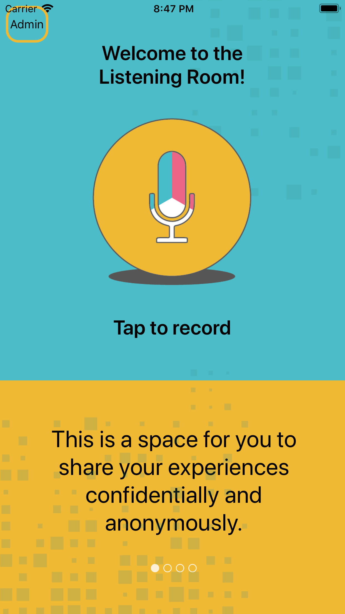
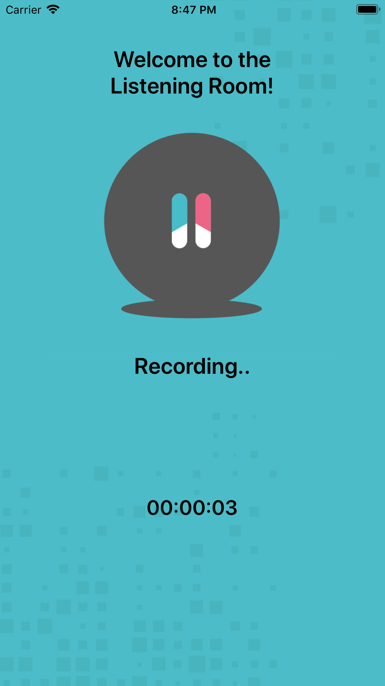
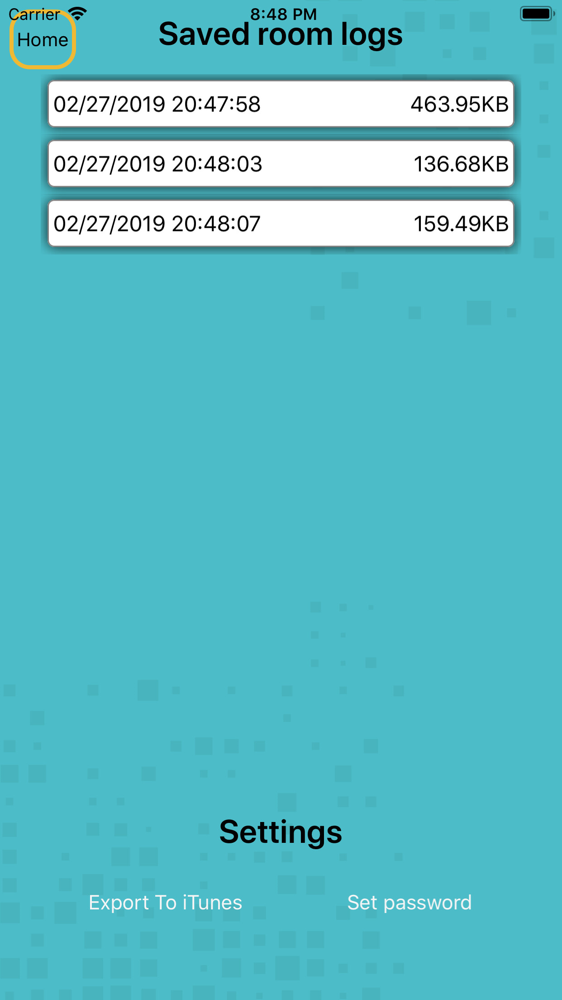
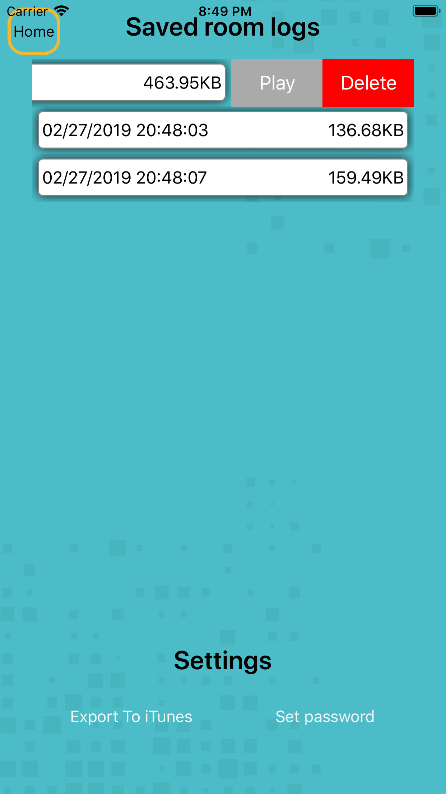
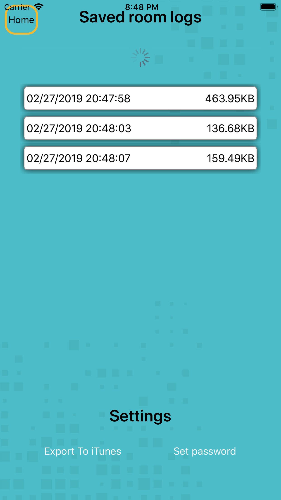
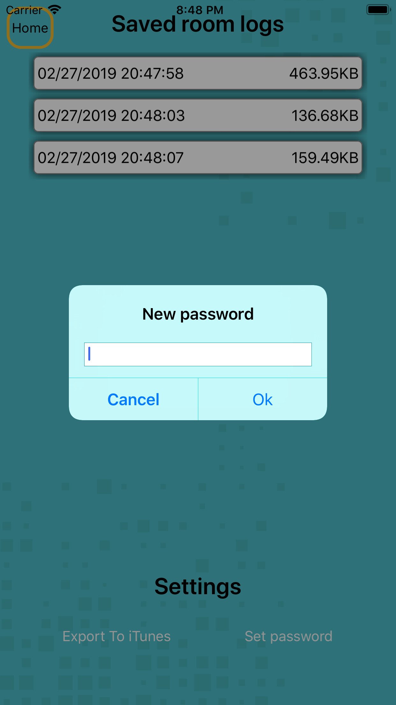
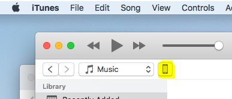
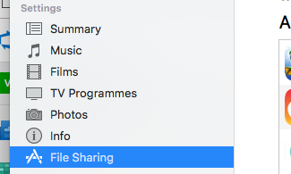
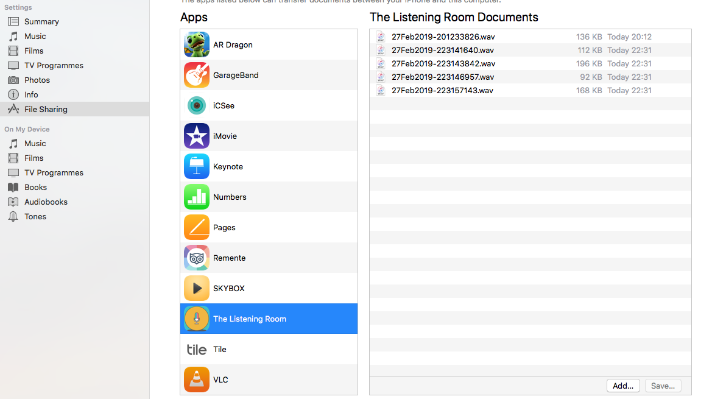

Tap the microphone icon to begin recording.
Tap the microphone again when you have finished speaking
a list of recordings, displaying the date and time that the recording started as well as the file-size.
swiping left on a recording provides options to delete or play the recording.
if you cant see any recordings, pull down on the list to refresh it.
A password can be set to prevent access to the admin screen and keep individual recordings safe.
load iTunes and click the button hi-lighted in yellow below
Select File Sharing from the Settings menu for your device
you may then use the save button to copy the files to your device, the delete key can be used to delete files
